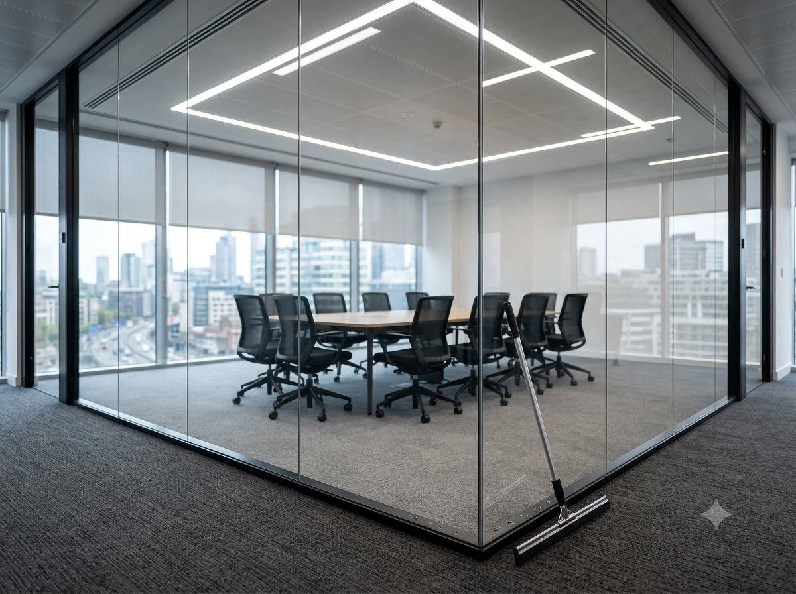

Звоните ежедневно 09:00–00:00+7 (925) 518-63-37
Заказать уборку

Офисное помещение нужно держать в чистом виде — от этого зависит комфорт сотрудников и впечатление деловых партнёров и посетителей о компании. Уборка офисов в Москве — одна из наших основных специализаций: гарантируем, что помещение будет максимально чистым, а все поверхности и мебель будут идеально выглядеть.
Мы уже долгие годы оказываем подобные услуги, поэтому знаем, как угодить каждому клиенту.
Ответственно подходим к найму — берём на работу только честных и квалифицированных людей с большим опытом.
Не нужно платить зарплату и покупать инвентарь и оборудование — приглашаете специалистов только тогда, когда это действительно нужно.
Не провоцируют аллергическую реакцию и не вредят здоровью, при этом эффективно убирают загрязнения.
Учитываем пожелания заказчика, при необходимости расширяем или уменьшаем перечень работ.
С его помощью убираем даже тяжёлые загрязнения в труднодоступных местах.
Точный состав работ обсуждается индивидуально с каждым заказчиком — учитываем изначальное состояние офиса и пожелания клиента. Например, поддерживающая уборка включает:
Работаем на выходных, в любое время суток. Вечерняя уборка офисов пригодится, если не хочется мешать сотрудникам в течение рабочего дня — можно пригласить специалистов после того, как все разойдутся по домам, и утром вернуться в чистый офис.
| Вид уборки | До 500 м² | От 500 до 1500 м² | От 1500 м² |
|---|---|---|---|
| Генеральная уборка | от 550 руб/м² | от 400 руб/м² | от 300 руб/м² |
| Ежедневная уборка | от 450 руб/м² | от 350 руб/м² | от 260 руб/м² |
| Уборка после ремонта | от 350 руб/м² | от 300 руб/м² | от 200 руб/м² |
| Химчистка ковролина в офисе | от 160 руб./м² |
Внимание! Цены не являются окончательными. Точную стоимость услуг уточняйте у менеджеров компании.
Выполняем уборку офисов вечером, утром или в любое другое удобное для клиента время.
Специалисты приезжают на объект в назначенный час, привозят с собой оборудование и средства.
Действуем по заранее подготовленному плану, в котором прописаны все работы, обговорённые с заказчиком.
Работаем осторожно, используем гипоаллергенные средства зарубежных производителей — мебель и поверхности остаются в идеальном состоянии.